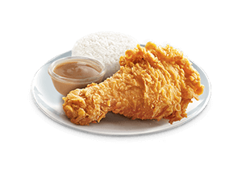

Chickenjoy

Description
The Best Fried Chicken! Crispylicious, Juicylicious! Jollibee’s perfectly seasoned fried chicken that’s crispy on the outside; tender and juicy on the inside.
Chickenjoy is basically the Filipino counterpart to KFC's fried chicken buckets (but infinitely better). It’s delicious. The chicken comes out hot and perfectly battered, with a crunchy exterior and juicy interior. It’s well-seasoned and cooked just right—not dry like other fried chicken spots. It’s real chicken paired with silky and savory gravy (that accompanies the chicken), a perfect combination. It’s all in the name: Chickenjoy brings genuine joy.
Ingredients:
- 2 kilos chicken your choice cuts
- salt and pepper
- cooking oil for deep frying
- 1 cup all-purpose flour
- 1 cup cornstarch
- 1/2 tsp. five spice powder or ngohiong powder
- 1 Tbsp. garlic powder
- 1 tsp. fine salt adjust if necessary
Steps:
- Put the chicken pieces in a bowl and season with salt and pepper. Rub and press each chicken with the salt and pepper so all the pieces is evenly coated.
- Next, to make the breading, in a mixing bowl, combine flour, cornstarch, five spice powder, garlic powder and salt.
- Stir the dry ingredients using a fork until all the ingredients are evenly mixed.
- Heat the oil in the deep fryer or deep frying pan for about 175°C.
- Coat a piece of chicken with the breading inside and out. Coat underneath the skin as well.
- Do it by pressing each chicken with the breading then shake off excess breading and fry it.
- Depending on the size of your fryer and the size of your chicken, you can put 4 to 5 pieces per batch.
- Just don't overcrowd the fryer to avoid the fried chicken to become soggy and loose it's crispiness.
- Cook it for about 15 to 20 minutes in medium fire.
- Put the chicken in a paper towel or a rack to drain the excess oil.
- Serve with your favorite gravy. Enjoy!
Back to home